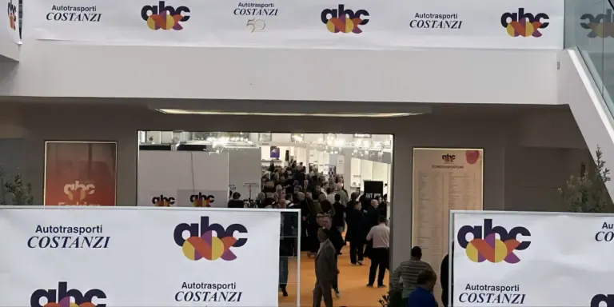
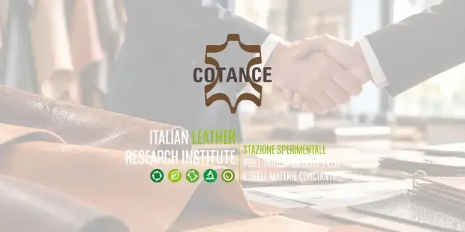
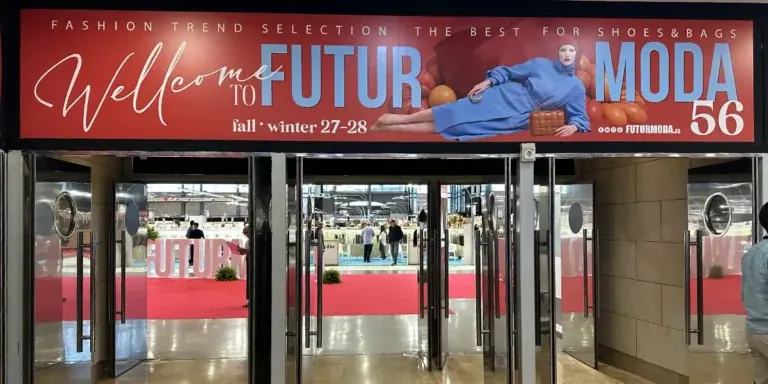

Tannery
Il futuro della conceria: digitalizzazione, sostenibilità e open innovation
Digitalizzazione, sostenibilità e open innovation: le sfide che attendono l'industria conciaria.
Le notizie della filiera, ogni giorno. Scegli una rivista per vedere solo il suo settore.
Tannery
Digitalizzazione, sostenibilità e open innovation: le sfide che attendono l'industria conciaria.

Shoes & Bags
A Fermo l'ABC Fashion Event 2026 registra il tutto esaurito tra gli espositori del distretto calzaturiero.

Tannery
La Stazione Sperimentale per l'Industria delle Pelli diventa supporting member di Cotance, la confederazione europea dei conciatori.

Shoes & Bags
Ad Elche la fiera dei componenti per calzatura e pelletteria mette al centro circolarità, intelligenza artificiale e nuovi materiali.

Safety First
Il nuovo numero della rivista delle calzature di sicurezza e dei DPI si può sfogliare online.

Tannery
L'opera di Andrea Bianconi torna a Zermeghedo, nella sede di GSC Group.
Shoes & Bags
La fiera vietnamita si presenta come piattaforma dell'area ASEAN per il sourcing di calzature e pelletteria.
Outerwear
I giubbotti in pelle Daytona 73.
Safety First
Il salone dell'emergenza di Montichiari chiude con più professionisti in visita e dà appuntamento al 2027.
Tannery
Il museo della filiera della pelle porta al Senato il suo progetto per avvicinare i giovani alle materie STEAM.
Safety First
La tecnologia HYPERFORM passa dalle scarpe sportive alle calzature da lavoro Diadora Utility.
Tannery
Acque del Chiampo presenta a Dioxin 2026 il suo lavoro contro i PFAS.
TexStyle
Al Palazzo Touring Club il press lunch della fiera del tessile casa e contract, a Francoforte dal 12 al 15 gennaio 2027.
Shoes & Bags
La fiera di Guangzhou torna nel 2027 per calzatura e pelletteria.
Shoes & Bags
Il XXIII Congresso Internazionale dei tecnici della calzatura si terrà a Jakarta.